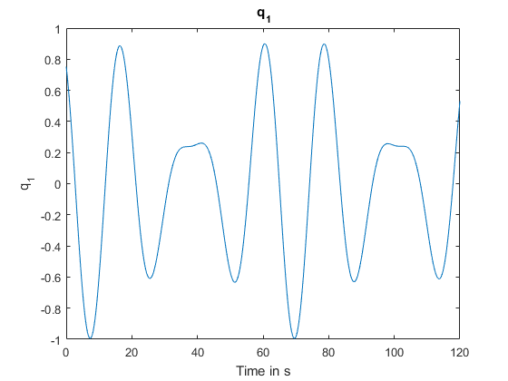
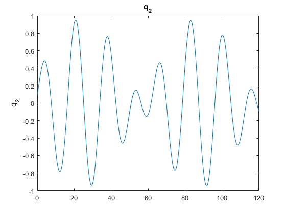
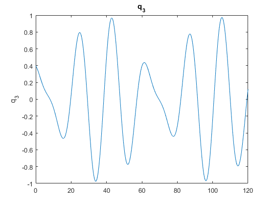
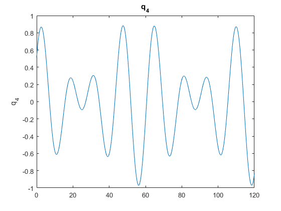
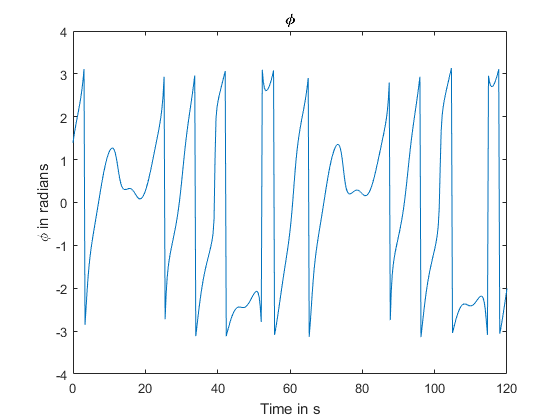
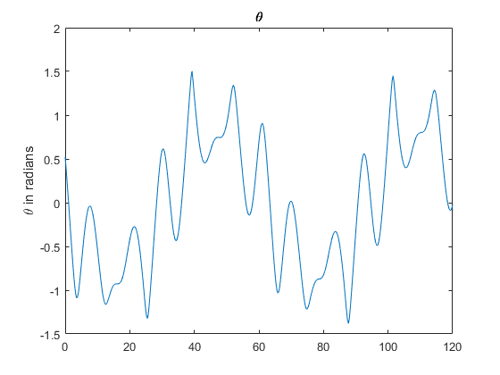
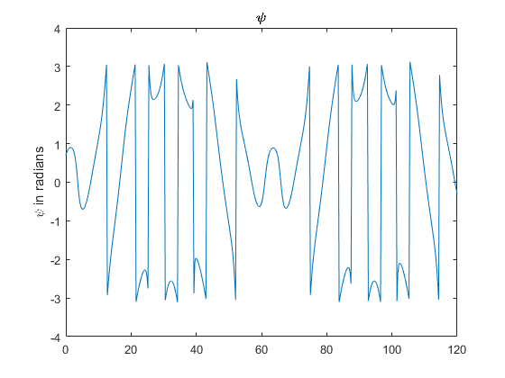

Contents
clear
clc
Problem 4
y0 = [80 30 40]*pi/180;
q0 = (eul2quat(y0))'
tspan = [0 120];
[tout, qout] = rkf45(@qrates, tspan, q0, 0.00000001);
q0 =
0.7522
0.0967
0.3987
0.5156
Quaternion time history
figure
plot(tout, qout(:,1))
ylabel('q_1')
title(' q_1')
xlabel('Time in s')
figure
plot(tout, qout(:,2))
ylabel('q_2')
title('q_2')
figure
plot(tout, qout(:,3))
ylabel('q_3')
title('q_3')
figure
plot(tout, qout(:,4))
ylabel('q_4')
title('q_4')
   
Euler angles time history
euler=quat2eul(qout);
figure
plot(tout, euler(:,1))
ylabel('\phi in radians')
title('\phi')
xlabel('Time in s')
figure
plot(tout, euler(:,2))
ylabel('\theta in radians')
title('\theta')
figure
plot(tout, euler(:,3))
ylabel('\psi in radians')
title('\psi')
  